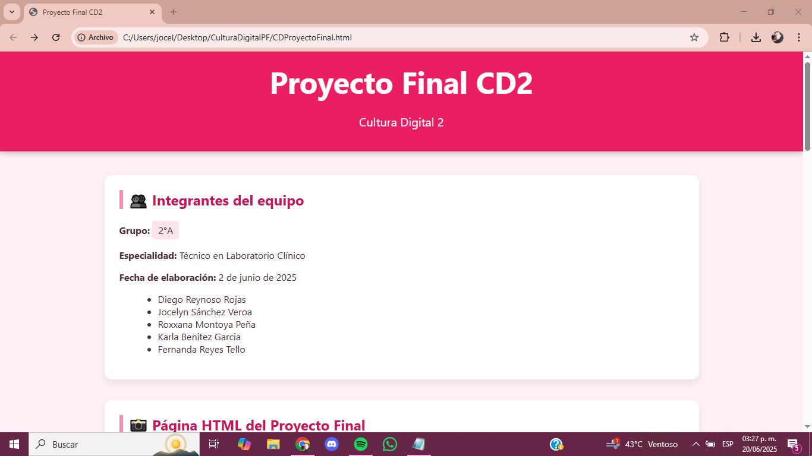
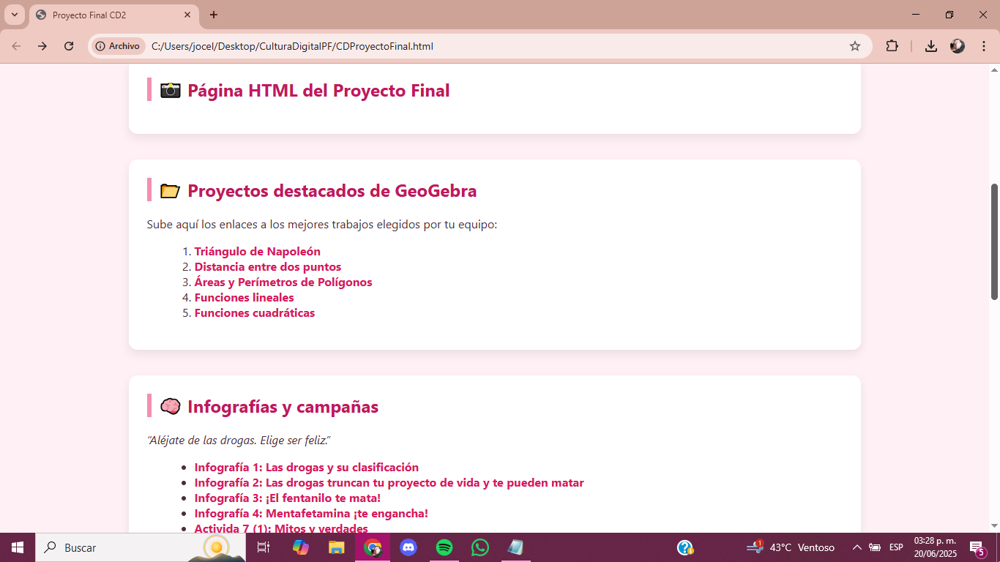
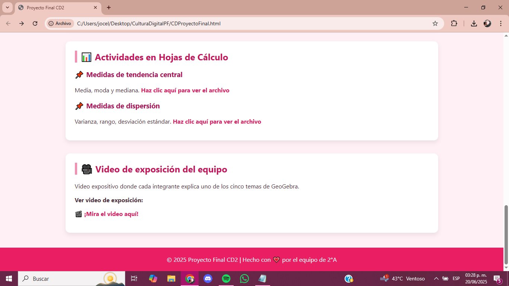
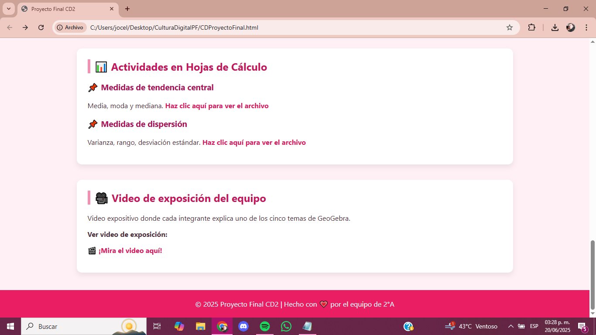

👥 Integrantes del equipo
Grupo: 2°A
Especialidad: Técnico en Laboratorio Clínico
Fecha de elaboración: 2 de junio de 2025
- Diego Reynoso Rojas
- Jocelyn Sánchez Veroa
- Roxxana Montoya Peña
- Karla Benitez Garcia
- Fernanda Reyes Tello
📸 Página HTML del Proyecto Final
  

📂 Proyectos destacados de GeoGebra
Sube aquí los enlaces a los mejores trabajos elegidos por tu equipo:
🧠 Infografías y campañas
“Aléjate de las drogas. Elige ser feliz.”
- Infografía 1: Las drogas y su clasificación
- Infografía 2: Las drogas truncan tu proyecto de vida y te pueden matar
- Infografía 3: ¡El fentanilo te mata!
- Infografía 4: Mentafetamina ¡te engancha!
- Activida 7 (1): Mitos y verdades
- Actividad 7 (2): Reflexión Vapeadores
- Infografía 5: Cannabis (marihuana). ¡Sí te daña!
📚 Información Matemática
🔺 Triángulo de Napoleón
📏 Distancia entre dos puntos
🔷 Polígonos, áreas y perímetros
📈 Funciones lineales y cuadráticas
📊 Actividades en Hojas de Cálculo
📌 Medidas de tendencia central
Media, moda y mediana. Haz clic aquí para ver el archivo
📌 Medidas de dispersión
Varianza, rango, desviación estándar. Haz clic aquí para ver el archivo
🎥 Video de exposición del equipo
Video expositivo donde cada integrante explica uno de los cinco temas de GeoGebra.
Ver video de exposición: